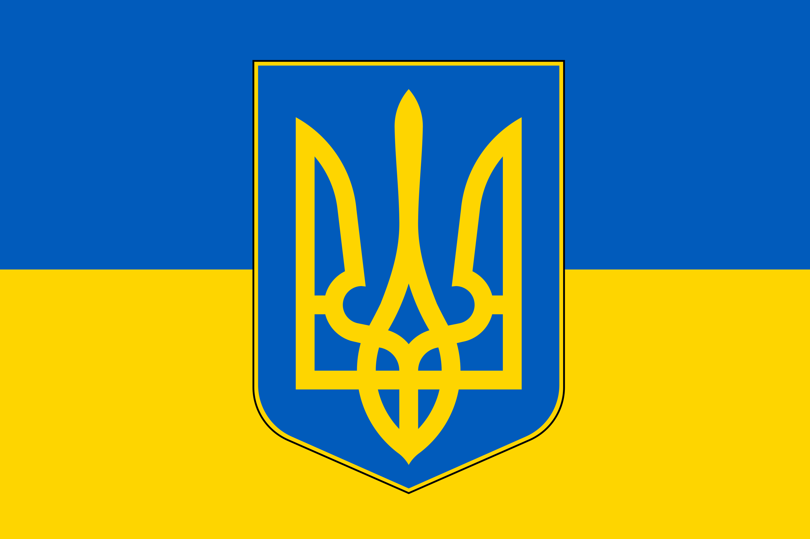

50.4501° N
30.5234° EKYIV, UKRAINE
30.5234° EKYIV, UKRAINE

Ukraine — ligne de front
Le sujet central de ce dossier. Mon manifeste lui est entièrement consacré — accessible plus bas.
→ cliquer pour agrandir